RoboFAPE: Failure-Aware Progress Estimation for Robot Manipulation
1 Tsinghua University2 Carnegie Mellon University3 Shanghai Qizhi Institution
CoRL 2026 Workshop on Continually Self-Improving Robots (CSIR)
Learning task progress from successful and naturally failed executions, with labels that capture stalls and regressions.
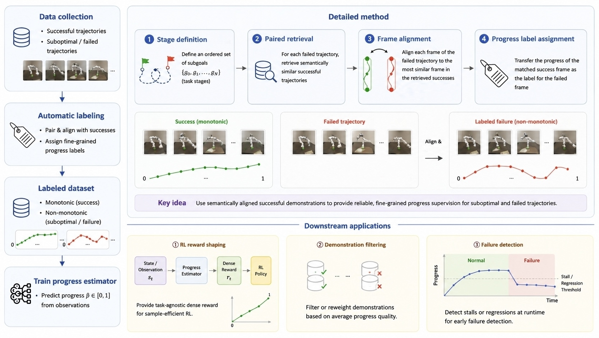
How much progress has a robot made when an execution goes wrong? Labels derived from elapsed time cannot capture a stalled grasp or a dropped object. RoboFAPE assigns frame-level progress to naturally failed policy rollouts by aligning task stages with successful references and resolving ambiguous matches through state distance and temporal continuity. This lets failed trajectories retain stalls and regressions on the same progress scale as successes. We study this supervision across 12 manipulation tasks and evaluate its use in progress estimation, failure detection, trajectory filtering, and a preliminary reinforcement-learning experiment. The public code provides the core trajectory-collection and progress-labeling pipeline.
Data across tasks and trajectory outcomes.
RoboFAPE combines successful demonstrations with naturally failed policy rollouts across 12 manipulation tasks, with balanced success and failure counts. Frame-level progress labels capture both steady progress and stalls or regressions. Separate in-distribution (IND) and out-of-distribution (OOD) evaluation sets measure performance under familiar and shifted conditions.
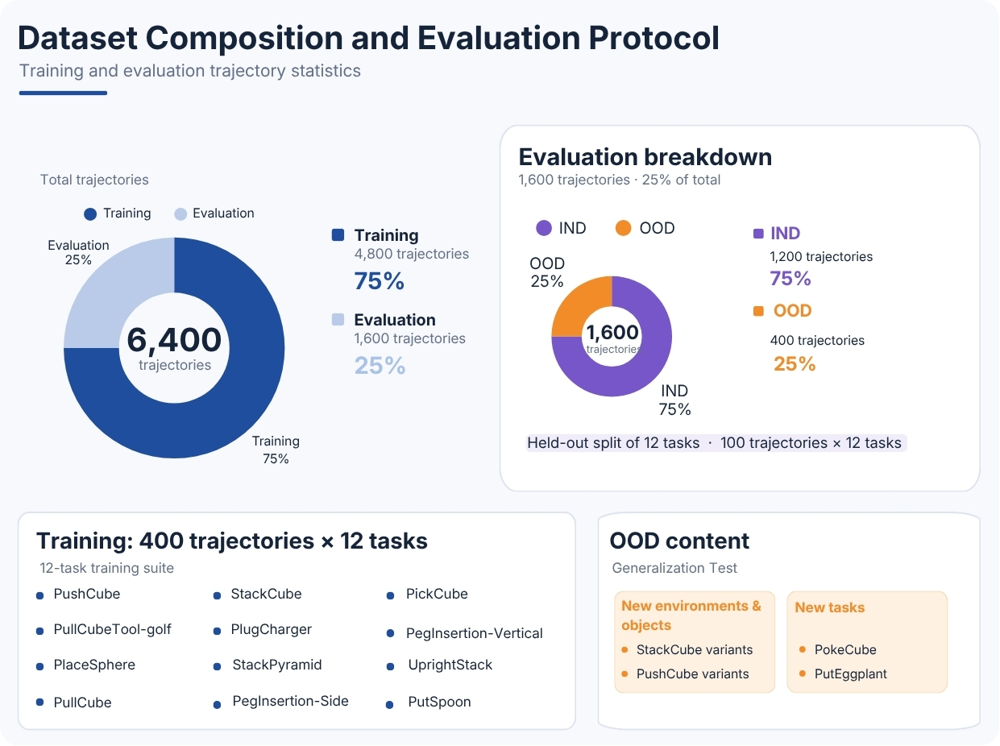
Progress should be allowed to go backward.
Temporal position is a useful label for successful demonstrations, but it cannot describe a dropped object, a stalled grasp, or a recovery. RoboFAPE turns those failure states into direct supervision by matching them to semantically corresponding successful states.
A VLM identifies ordered phases and phase-completion subgoals.
Each failure phase is paired with a successful phase using its initial distance to the subgoal.
Non-monotonic distance profiles are split into monotone segments and matched with temporal coherence.
Success and failure labels share a reference progress scale for estimator training.
Natural failures
Failures arise from autonomous policy rollouts after motion-plan takeover, rather than hand-scripted perturbations.
Segment-aware labels
Sequential matching combines distance and label continuity to resolve ambiguous correspondences when a task state regresses.
Three uses
We evaluate progress predictions for dense reward shaping, trajectory-level failure detection, and trajectory filtering.
Results
We evaluate RoboFAPE first as a progress estimator, then as a signal for three downstream robot-learning applications.
Progress Estimation
The clearest improvements are on IND failures. Generalization to shifted environments, objects, and unseen tasks is mixed. Metrics compare predictions with pipeline-generated, manually calibrated reference labels.
IND progress MSE ↓
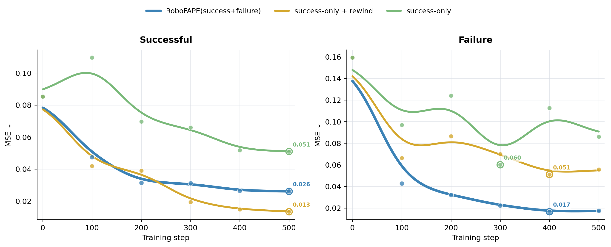
Natural-failure supervision lowers error on IND failures at the displayed trained checkpoints.
IND Spearman correlation ↑
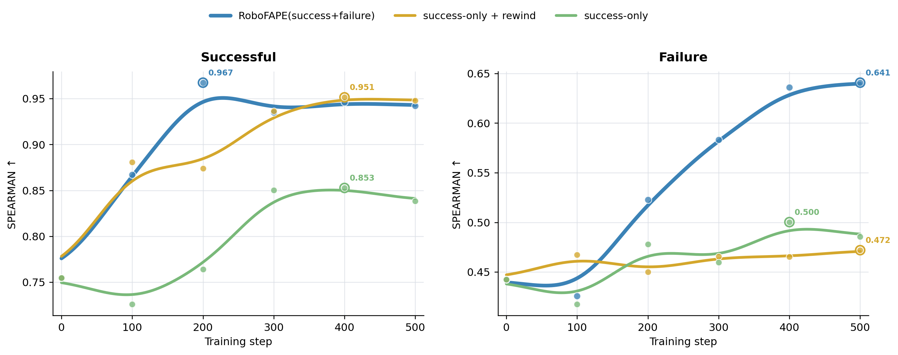
Rank agreement on failures improves at later checkpoints; successful trajectories show a tradeoff across metrics.
OOD progress MSE ↓
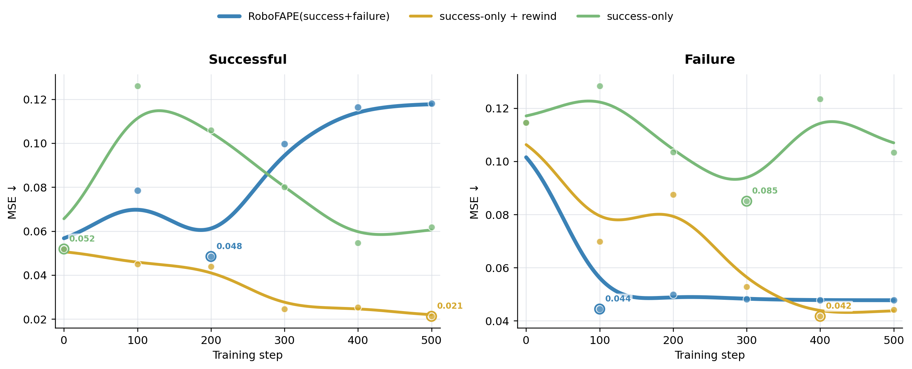
The IND advantage does not transfer uniformly. Rewind augmentation remains competitive on OOD error.
OOD Spearman correlation ↑
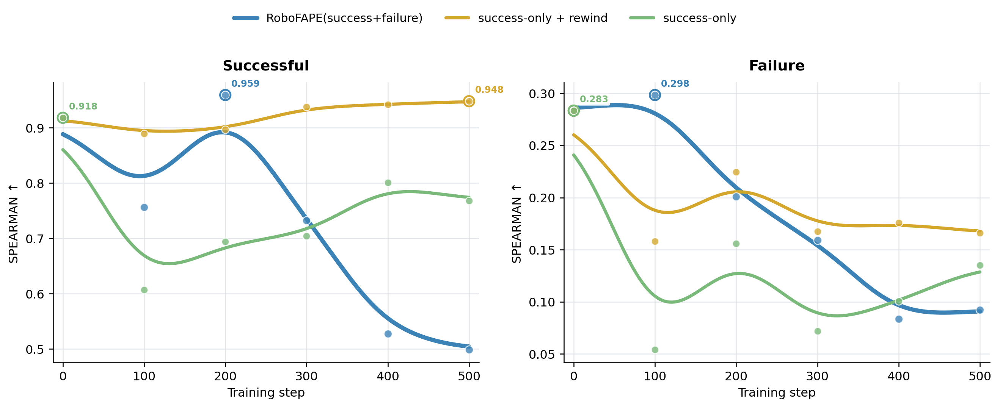
RoboFAPE reaches higher observed peaks, but the advantage is not sustained at later checkpoints.
Downstream Applications
PushCube success rate
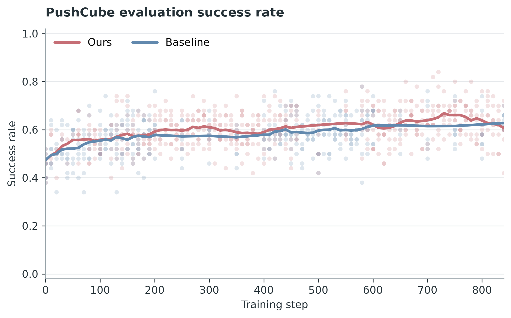
PushCube explained variance
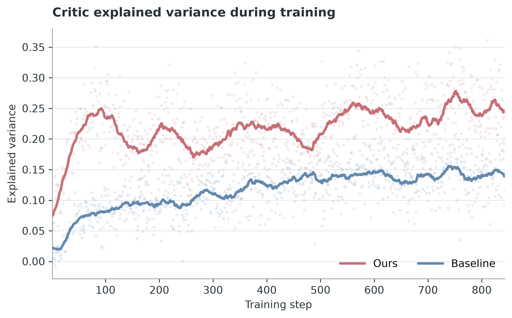
A preliminary PushCube PPO experiment shows modest success-rate differences and higher critic explained variance relative to success-only training. The reward uses predicted progress and simulator success. Results on one task do not establish general RL gains.
Failure detection - IND
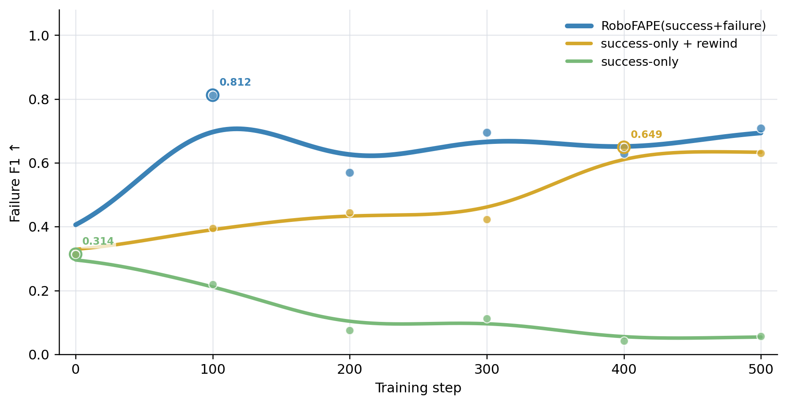
Failure detection - OOD
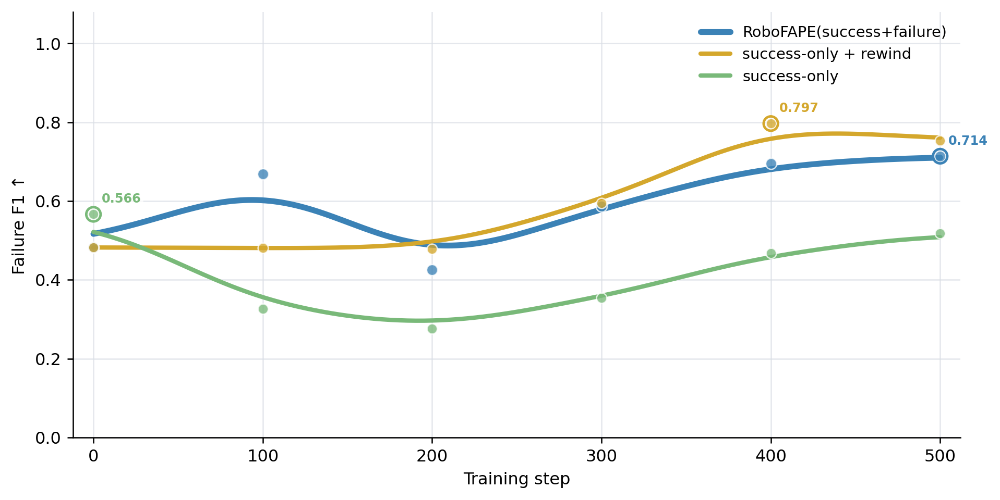
| Split | RoboFAPE | Success-only + rewind | Success-only |
|---|---|---|---|
| IND Failure F1 | 0.812 | 0.649 | 0.314 |
| OOD Failure F1 | 0.714 | 0.797 | 0.566 |
RoboFAPE achieves the highest IND Failure F1; rewind augmentation performs better on OOD. Failure is the positive class, and F1 is averaged equally over tasks. Detection uses at most 30 frames: any 12-frame window with progress–time Pearson < −0.2, or final progress < 0.5, marks a failure.
Data filtering - IND
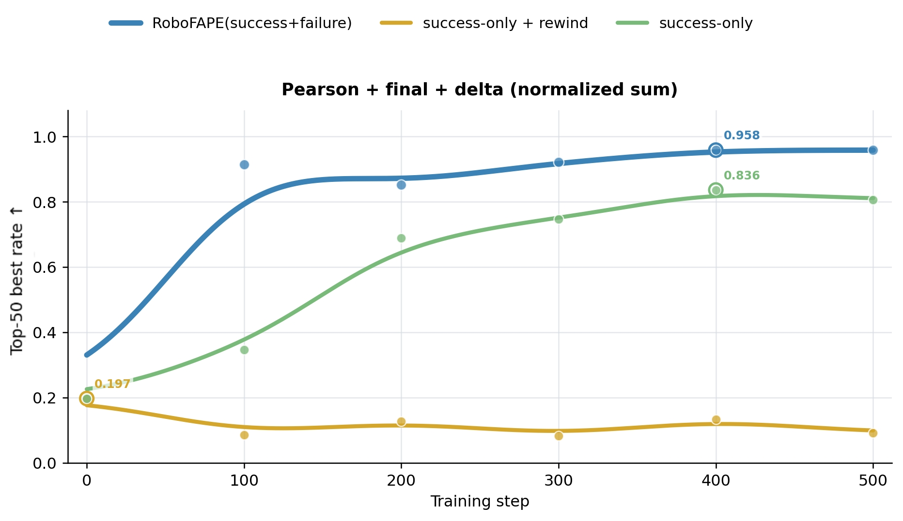
Data filtering - OOD
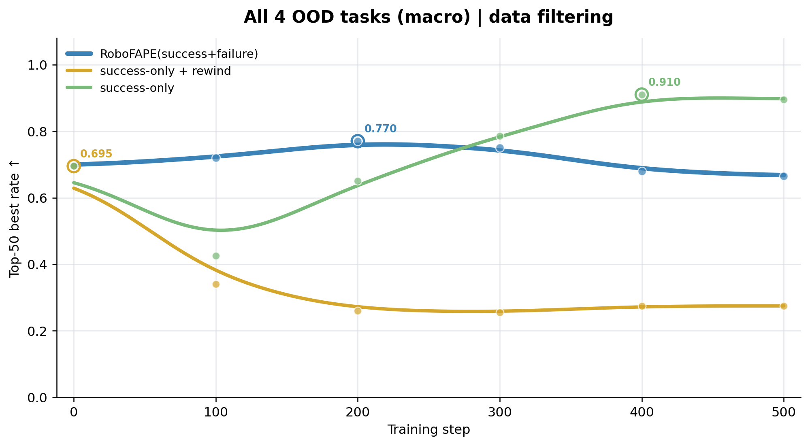
| Split | RoboFAPE | Success-only + rewind | Success-only |
|---|---|---|---|
| IND top-50 | 0.958 | 0.197 | 0.836 |
| OOD top-50 | 0.770 | 0.695 | 0.910 |
RoboFAPE achieves the highest IND top-50 correctness, while success-only training performs better on OOD. For each query task, candidates include all test trajectories across tasks and quality levels. Ranking sums normalized progress–time Pearson correlation, net progress change, and final progress.
Dots are measured checkpoints; smooth curves are visual guides. Detection and filtering tables report best observed scores selected separately on each evaluation split, including step 0. These are not multi-seed confidence intervals.